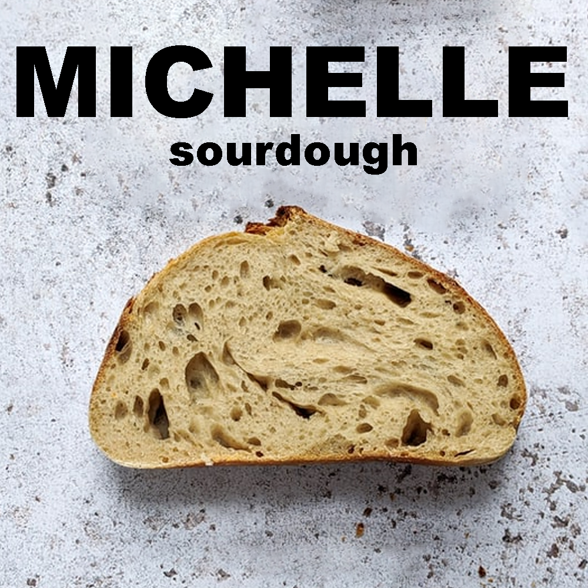
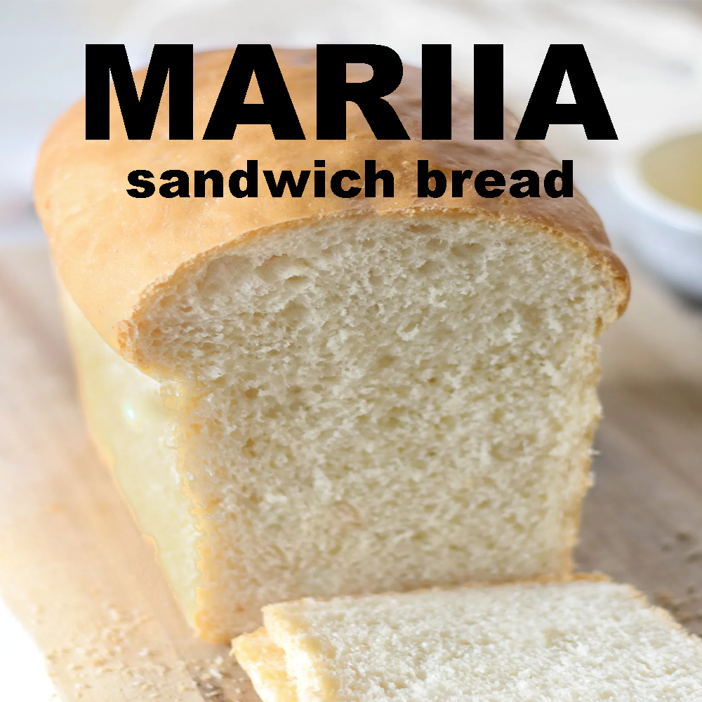
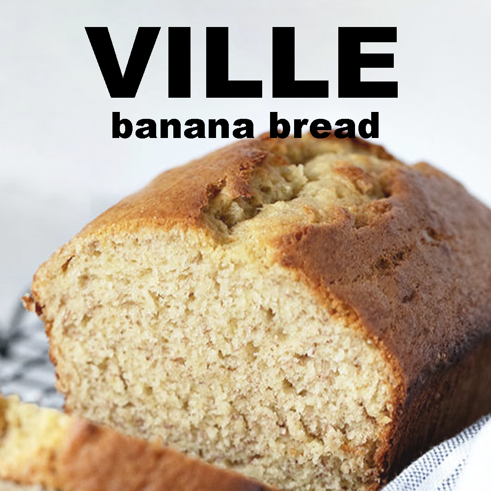

Connections
Politeness
The definition of politeness is very different in American and Finnish culture. While it is polite to talk to and entertain people around you in the USA, that can be considered rude in Finland as you are expected to give the people around you their personal space.
A shocking example of Finnish politeness is if for example when you see somebody trip and fall in public, you should not offer your help unless the person is in distress. It is best to ignore and not acknowledge the situation to spare the person of their embarrassment.
Anecdotes
Recently there was a Finnish newspaper article about a woman who likes to greet random strangers while walking outside. She wanted to see if this part of American culture could take hold in Finland. The reactions from strangers varied greatly. She reported that most people were taken aback by her greeting and many did not greet back or look her way.
I have lived in my current apartment building for awhile now and I don't know who any of my neighbors are. I would not even recognize them on the street. Before I leave my apartments I listen if there are neighbors in the hallway. If so, I wait until they are gone before I leave the apartment. This is very common behavior here and I have heard of many people doing the same.
Similarities
American and Finnish culture are both western. So their way of thinking is not that different after all. Both countries are modern, both socially and technologically. Most Finnish people speak English very well so the language barrier is rarely the hurdle in communication between the two cultures.
Pieces of the same pie
But in the end, we are all just pieces of the same pie. Or as this BuzzFeed Quiz suggests, when it comes down to it, we are all just a different kinds of bread.
  